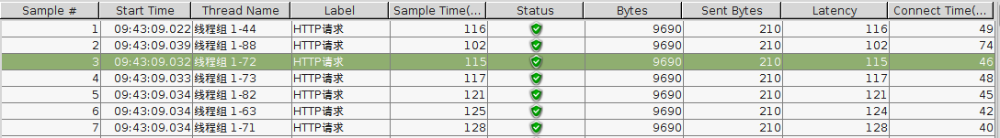

系统信息
本文所有配置均在:
CentOS release 6.5 (Final)
版本下进行测试。详细环境信息如下:
-
服务器型号: -- HP Z228 Microtower Workstation
$ dmidecode | grep Product # Product Name: HP Z228 Microtower Workstation
-
CPU 信息: -- 4核, 64位模式运行
$ cat /proc/cpuinfo |grep "name" |cut -f2 -d: |uniq -c # 4 Intel(R) Xeon(R) CPU E3-1226 v3 @ 3.30GHz $ getconf LONG_BIT # 64
-
内存信息: -- 4G内存
$ free -m
-
硬盘信息: -- 1TB 硬盘
$ df -lh
-
系统信息:
$ head -n 1 /etc/issue # CentOS release 6.5 (Final) $ uname -a # Linux inner.lesson1234.com 2.6.32-431.el6.x86_64 #1 # SMP Fri Nov 22 03:15:09 UTC 2013 x86_64 x86_64 x86_64 GNU/Linux
-
JAVA 版本: -- JDK-1.6
$ java -version # java version "1.6.0_45"
-
GCC 版本: -- gcc version 4.4.7
$ sudo yum install gcc # gcc version 4.4.7 $ sudo yum install g++ # gcc version 4.4.7 $ sudo yum install make # GNU Make 3.81
CentOS 基本配置
解决ssh登陆慢
$ sudo vim /etc/ssh/sshd_config # 修改: UseDNS no # 修改: GSSAPIAuthentication no
添加一个普通用户
# adduser jiwanger # 添加用户 # passwd jiwanger # 为此用户设置密码 # 将此用户添加到 sudoers, 只有 sudoers 用户才有权限执行 sudo 命令 # vim /etc/sudoers # 在root ALL=(ALL) ALL 下面添加一行 # jiwanger ALL=(ALL) ALL
CentOS 配置网络
编辑:
/etc/sysconfig/network-scripts/ifcfg-eth0
文件，内容修改如下:
DEVICE=eth0 HWADDR=50:65:F3:20:AB:57 TYPE=Ethernet UUID=0e15bb23-6362-4926-b980-1e3d3e8836aa ONBOOT=yes NM_CONTROLLED=yes BOOTPROTO=none IPADDR=192.168.1.177 PREFIX=24 GATEWAY=192.168.1.1 DNS1=119.29.29.29 DOMAIN=8.8.8.8 DEFROUTE=yes IPV4_FAILURE_FATAL=yes IPV6INIT=no NAME="inner-network"
CentOS 配置 JAVA 环境
将系统原有的 openjdk 换成 jdk-1.6
# 1. 查询安装的 jdk 版本 $ rpm -qa|grep java # 2. 卸载已经安装的JAVA $ sudo yum remove java-1.7.0-openjdk-1.7.0.45-2.4.3.3.el6.x86_64 $ sudo yum remove java-1.6.0-openjdk-1.6.0.0-1.66.1.13.0.el6.x86_64 $ sudo yum remove tzdata-java-2013g-1.el6.noarch # 3. SCP 上传 jdk-1.6 安装包到服务器 $ scp jdk-6u45-linux-x64-rpm.bin jiwanger@192.168.1.177:/home/jiwanger/packages # 4. 安装 jdk-1.6 $ cd packages $ chmod +x jdk-6u45-linux-x64-rpm.bin $ sudo ./jdk-6u45-linux-x64-rpm.bin # 执行安装包 $ sudo rpm -ivh jdk-6u45-linux-amd64.rpm # 安装 rpm 包 # 5. 配置环境变量 $ sudo vim /etc/profile # export JAVA_HOME=/usr/java/jdk1.6.0_45/ # export PATH=$JAVA_HOME/bin:$JAVA_HOME/jre/bin:$PATH # export CLASSPATH=.:$JAVA_HOME/lib:$JAVA_HOME/jre/lib:$CLASSPATH
CentOS 配置 TOMCAT(两个 tomcat, 端口为: 8080 和 8081)
更多配置参见: Tomcat 配置
# 1. 上传 tomcat 包 $ scp apache-tomcat-6.0.39.tar.gz jiwanger@192.168.1.177:/home/jiwanger/packages/ # 2. 解压并复制两个 tamcat 实例 $ tar -xvf apache-tomcat-6.0.39.tar.gz $ cp -r apache-tomcat-6.0.39 ../soft/apache-tomcat-6.0.39-e1 $ cp -r apache-tomcat-6.0.39 ../soft/apache-tomcat-6.0.39-e2 # 3. 端口冲突解决 # 3.1 修改 e1 这个 tomcat 实例的端口号为: 8081 $ vim apache-tomcat-6.0.39-e1/conf/server.xml # 3.2 将 e2 这个 tomcat 实例 server.xml 端口修改为 8006 $ vim apache-tomcat-6.0.39-e2/conf/server.xml # <Server port="8006" shutdown="SHUTDOWN"> # 3.3 将 e2 这个 tomcat 实例的 bin/catalina.sh 中的 CATALINA_HOME 这个环境变量修改为 CATALINA_HOME_2 # 3.4 添加以下两个变量到环境变量 $ sudo vim /etc/profile # export CATALINA_HOME=/home/jiwanger/soft/apache-tomcat-6.0.39-e1/ # export CATALINA_HOME_2=/home/jiwanger/soft/apache-tomcat-6.0.39-e2/ # 4. 配置 Tomcat Web Application Manager $ vim apache-tomcat-6.0.39-e1/conf/tomcat-users.xml $ vim apache-tomcat-6.0.39-e2/conf/tomcat-users.xml # 在 <tomcat-users> 标签加如下两行: # <role rolename="manager-gui"/> # <user username="jiwanger" password="ilesson1401" roles="manager-gui"/> # 5. 为 tomcat 配置虚拟目录 $ vim apache-tomcat-6.0.39-e1/conf/server.xml $ vim apache-tomcat-6.0.39-e2/conf/server.xml # 在 <Host>和</Host>之间加上: # <Context path="/site" docBase="/home/jiwanger/data/web/site/" reloadable="true" debug="0" /> # <Context path="/data" docBase="/home/jiwanger/data/web/data/" reloadable="true" debug="0" /> # 6. tamcat 添加到开机启动 $ sudo vim /etc/rc.d/rc.local # /home/jiwanger/soft/apache-tomcat-6.0.39-e1/bin/startup.sh # /home/jiwanger/soft/apache-tomcat-6.0.39-e2/bin/startup.sh
CentOS 配置防火墙
$ sudo iptables -L -n # 查看状态 $ sudo vim /etc/sysconfig/iptables # 添加 80 和 8080 端口 # -A INPUT -p tcp -m state --state NEW -m tcp --dport 80 -j ACCEPT # -A INPUT -p tcp -m state --state NEW -m tcp --dport 8080 -j ACCEPT # -A INPUT -p tcp -m state --state NEW -m tcp --dport 8081 -j ACCEPT $ sudo service iptables restart # 重启防火墙
CentOS 配置MYSQL
$ sudo yum install mysql-server
$ sudo yum -y install php-mysql # 安装php-mysql
$ sudo /etc/rc.d/init.d/mysqld start # 启动mysql
$ mysql -u root # 用root用户登录MySQL服务器
$ set password for root@localhost=password('ilesson1401'); # 设置root密码
$ select user,host,password from mysql.user; # 查看用户信息
$ sudo chkconfig mysqld on # 设置MySQL服务随系统启动自启动
$ sudo chkconfig --list mysqld # 确认MySQL自启动
# mysqld 0:off 1:off 2:on 3:on 4:on 5:on 6:off # 如果2--5为on的状态就OK
# delete from mysql.user where user=''; # 删除匿名用户
# drop database test; # 删除名为test的空数据库
$ mysql -u root -p # 查看编码
# show variables like 'character%';
$ sudo cp /etc/my.cnf /etc/my.cnf.bak
$ sudo cp /usr/share/doc/mysql-server-5.1.73/my-large.cnf /etc/my.cnf
$ sudo vim /etc/my.cnf
# 在[mysqld]下添加
# default-character-set = utf8
# 在[client]下添加
# default-character-set = utf8
$ sudo service mysqld restart
$ mysql -u root -p # 编码是否修改为 utf-8
# show variables like 'character%';
CentOS 配置FTP
$ sudo yum install vsftpd # 安装 vsftpd $ sudo vim /etc/sysconfig/iptables # 配置防火墙 # -A INPUT -p tcp -m state --state NEW -m tcp --dport 20 -j ACCEPT # -A INPUT -p tcp -m state --state NEW -m tcp --dport 21 -j ACCEPT $ sudo vim /etc/sysconfig/iptables-config # IPTABLES_MODULES="" 修改如下: # IPTABLES_MODULES="ip_nat_ftp ip_conntrack_ftp" $ sudo service iptables restart $ sudo vim /etc/passwd # 修改 ftp 用户主目录 # ftp:x:14:50:FTP User:/home/jiwanger:/sbin/nologin $ sudo setsebool -P ftp_home_dir on # 允许 ftp 目录为用户主目录, -P 为永久设置 $ sudo chkconfig vsftpd on # 配置开机启动 $ sudo chkconfig --list vsftpd # 查看是否开机启动 2和5 为: on $ sudo service vsftpd restart # 重启 vsftpd ### 添加一个 ftp 用户 $ sudo useradd -d /home/ftp -g ftp -s /sbin/nologin ftp-ilesson $ sudo passwd ftp-ilesson
Apache 安装配置
Apache HTTP Server 是 Apache 软件基金会的一个开放源码的网页服务器，可以在大多数计算机操作系统中运行，由于其多平台和安全性被广泛使用，是最流行的 Web 服务器端软件之一。它快速、可靠并且可通过简单的 API 扩展，将 Perl/Python 等解释器编译到服务器中 。
下面是基本安装配置，关于更多 Apache 的配置，参照: Apache HTTP Server
# 1.安装 httpd $ sudo yum -y install httpd # 2.修改 /etc/httpd/conf/httpd.conf $ sudo vim /etc/httpd/conf/httpd.conf # 找到 #ServerName www.example.com:80，修改为：ServerName localhost:80 # 3.配置 iptables $ sudo vim /etc/sysconfig/iptables # 添加一行 # -A INPUT -m state --state NEW -m tcp -p tcp --dport 80 -j ACCEPT $ sudo service iptables restart # 4.安装 PHP 运行 $ sudo yum install php php-devel # 5.加入开机启动 $ sudo chkconfig httpd on # 6.重启 httpd $ sudo service httpd restart
CentOS 定时任务
Crond 是 Linux 系统用来定期执行命令或指定程序任务的一种服务或软件。
Crond 服务会定期（默认每分钟检查一次）检查系统中是否有要执行的任务工作。如果有，便会根据其预先设定的定时任务规则自动执行该定时任务工作。
Linux 系统中定时任务调度的工作可以分为以下两种情况：
-
Linux 系统自身定期执行的任务工作：系统周期性自行执行的任务工作，如轮询系统日志、备份系统数据、清理系统缓存等，这些任务无须我们人为干预。
$ ll /var/log/messages* # -rw-------. 1 root root 144 Mar 26 03:15 /var/log/messages # -rw-------. 1 root root 651889 Mar 12 00:40 /var/log/messages-20170312 # -rw-------. 1 root root 180808 Mar 18 19:18 /var/log/messages-20170319 # -rw-------. 1 root root 19937 Mar 22 23:42 /var/log/messages-20170326
-
用户执行的任务工作：某个用户或系统管理员定期要做的工作，例如每隔5分钟和互联网上的时间服务器进行时间同步，每天晚上0点备份网站站点数据及数据库数据，一般这些工作需要由用户自己来设置。
$ crontab -l # no crontab for jiwanger # 因为 jiwanger 这个用户还没有自定义任务
新增调度任务可用两种方法：
-
在命令行输入:
crontab -e然后添加相应的任务，wq 存盘退出。 -
直接编辑
/etc/crontab文件，即$ vim /etc/crontab，添加相应的任务。
-
$ crontab -e配置是针对某个用户的，而编辑/etc/crontab是针对系统的任务 -
$ crontab -l-- 列出当前的所有调度任务 -
$ crontab -l -u jiwanger-- 列出用户 jiwanger 的所有调度任务 -
$ crontab -r-- 删除所有任务调度工作
SHELL=/bin/bash PATH=/sbin:/bin:/usr/sbin:/usr/bin MAILTO=root HOME=/ # For details see man 4 crontabs # Example of job definition: # .---------------- minute (0 - 59) # | .------------- hour (0 - 23) # | | .---------- day of month (1 - 31) # | | | .------- month (1 - 12) OR jan,feb,mar,apr ... # | | | | .---- day of week (0 - 6) (Sunday=0 or 7) OR sun,mon,tue,wed,thu,fri,sat # | | | | | # * * * * * user-name command to be executed # 这个文本解释的已经比较直观了，其中: # 星号（*）：代表所有可能的值，例如month字段如果是星号，则表示在满足其它字段的制约条件后每月都执行该命令操作。 # 逗号（,）：可以用逗号隔开的值指定一个列表范围，例如，“1,2,5,7,8,9” # 中杠（-）：可以用整数之间的中杠表示一个整数范围，例如“2-6”表示“2,3,4,5,6” # 正斜线（/）：可以用正斜线指定时间的间隔频率，例如“0-23/2”表示每两小时执行一次。 # 同时正斜线可以和星号一起使用，例如*/10，如果用在minute字段，表示每十分钟执行一次。
一个实例：
5 * * * * ls # 指定每小时的第5分钟执行一次 ls 命令 30 5 * * * ls # 指定每天的 5:30 执行 ls 命令 30 7 8 * * ls # 指定每月 8 号的 7：30 分执行 ls 命令 30 5 8 6 * ls # 指定每年的 6 月 8 日 5：30 执行 ls 命令 30 6 * * 0 ls # 指定每星期日的 6:30 执行 ls 命令 30 3 10,20 * * ls # 每月 10 号及 20 号的 3：30 执行 ls 命令 25 8-11 * * * ls # 每天 8-11 点的第 25 分钟执行 ls 命令 */15 * * * * ls # 每 15 分钟执行一次 ls 命令 30 6 */10 * * ls # 每个月中，每隔 10 天 6:30 执行一次 ls 命令
为 root 用户添加一个 5 分钟后重启的命令：
# 1.查看当前时间 $ date # 2.如果时间不对，先同步下时间 $ sudo /usr/sbin/ntpdate time.nist.gov # 3.切换到 root 用户 $ su root # 4.使用 crontab -e 命令编辑 # crontab -e 10 17 * * * /sbin/shutdown -r now # 此命令是每天 17:10 分执行 /sbin/shutdown -r now 命令 # 5.使用 crontab -l 命令查看是否生效 # crontab -l
流量监控工具 vnstat 配置
vnstat 是一个 Linux
下的网络流量监控软件，它记录指定网卡每日的传输流量日志。它并非基于网络包的过滤，而是分析文件系统
/proc
，所以
vnstat
无需 root 的权限就可使用。
vnstat 安装配置
# 1.CentOS 需要先安装 epel 源 $ sudo yum install epel-release # 2.安装 vnstat $ sudo yum install vnstat # 3.创建监控数据库 $ sudo vnstat -u -i eth0 # eth0 是需要监控的网卡，可以用 ifconfig 命令来查看使用的网卡 # 4.添加开机启动 $ sudo chkconfig vnstat on # 5.启动 vnstat, 启动后要过几分钟才有数据显示 $ sudo service vnstat start # 6.问题：如果安装的版本无法启动 service $ cd /etc/init.d $ sudo wget http://humdi.net/vnstat/init.d/redhat/vnstat $ sudo chmod +x vnstat $ sudo chkconfig --add vnstat $ sudo chkconfig vnstat on $ sudo service vnstat restart
查看统计数据
# 1.查看流量报表 $ vnstat # 2.查看当前实时流量 $ vnstat -l # 3.查看每天流量统计 $ vnstat -d # 4.查看每月流量统计 $ vnstat -m # 5.查看每小时流量统计 $ vnstat -h # 6.查看每周流量统计 $ vnstat -w # 7.更多命令查看帮助文档 $ vnstat --help
CentOS 自动挂载 NTFS
CentOS 6.5 实现自动挂载 NTFS 格式移动设备
# 1. 安装 fuse $ sudo yum install fase # 2. 下载 ntfs-3g $ wget https://tuxera.com/opensource/ntfs-3g_ntfsprogs-2017.3.23.tgz --no-check-certificate # 3. 解压 tgz 文件 $ tar -xvf ntfs-3g_ntfsprogs-2017.3.23.tgz # 4. 安装 ntfs-3g $ ./configuration $ make $ sudo make install # 5. 实现移动硬盘自动挂载 $ sudo vim /sbin/mount.ntfs # 写入如下内容： #!/bin/sh export LANG=Zh_CN.UTF-8 exec /sbin/mount.ntfs-3g $@
Nginx 配置
Nginx ("engine x") 是一个高性能的HTTP和反向代理服务器，也是一个IMAP/POP3/SMTP服务器。
Nginx作为负载均衡服务器: Nginx 既可以在内部直接支持 Rails 和 PHP 程序对外进行服务，也可以支持作为 HTTP代理服务器对外进行服务。Nginx采用C进行编写，不论是系统资源开销还是CPU使用效率都比 Perlbal 要好很多。
高并发的情况: Nginx是Apache服务器不错的替代品：Nginx在美国是做虚拟主机生意的老板们经常选择的软件平台之一。能够支持高达 50,000 个并发连接数的响应。
负载均衡原理和配置
Nginx提供的负载均衡策略有2种：内置策略和扩展策略。内置策略: 轮询，加权轮询，Ip hash；扩展策略这是不作介绍。
轮询和加权轮询 -- 轮询为平均分配，加权轮询根据权重分配。

Ip hash算法 -- 对客户端请求的ip进行hash操作，然后根据hash结果将同一个客户端ip的请求分发给同一台服务器进行处理，可以解决session不共享的问题。

安装配置
$ sudo yum install nginx
# 如果显示: No package nginx available.
# wget http://dl.fedoraproject.org/pub/epel/6/x86_64/epel-release-6-8.noarch.rpm
# rpm -ivh epel-release-6-8.noarch.rpm
$ sudo chkconfig nginx on
$ sudo vim /etc/nginx/nginx.d/default.conf # 将 server 块下的 listen 端口修改为:80
# listen 80;
$ sudo vim /etc/nginx/nginx.conf # 修改配置文件，在 http 块内加如下内容:
# upstream 192.168.1.177 {
# # 1. 轮询
# # server 192.168.1.177:80;
# # server 192.168.1.177:8080;
# # 2. 加权轮询
# # server 192.168.1.177:80 weight=2; # 80 端口权重为 2
# # server 192.168.1.177:8080 weight=1; # 8080 端口权重为 1
# # 3. ip_hash
# ip_hash; # 使用 ip_hash 算法，解决session不共享的问题
# server 192.168.1.177:8080;
# server 192.168.1.177:80;
# }
#
# server {
# listen 80; # 监听80端口
# server_name 192.168.1.177;
#
# location / {
# proxy_pass http://192.168.1.177; # 此处和 upstream 要一致
# proxy_redirect default;
# }
# }
$ sudo service nginx reload # 重启 nginx
# 在浏览器输入: http://192.168.1.177 , 此时将在 192.168.1.177 的 80 和 8080 端口间切换访问
Apache Jmeter 工具
Apache JMeter 是Apache组织开发的基于Java的压力测试工具。用于对软件做压力测试，它最初被设计用于Web应用测试，但后来扩展到其他测试领域。 它可以用于测试静态和动态资源，例如静态文件、Java 小服务程序、CGI 脚本、Java 对象、数据库、FTP 服务器， 等等。JMeter 可以用于对服务器、网络或对象模拟巨大的负载，来自不同压力类别下测试它们的强度和分析整体性能。另外，JMeter能够对应用程序做功能/回归测试，通过创建带有断言的脚本来验证你的程序返回了你期望的结果。为了最大限度的灵活性，JMeter允许使用正则表达式创建断言。
测试计划: 一个测试计划描述了一系列 Jmeter 运行时要执行的步骤。一个完整的测试计划包含一个或者多个线程组，逻辑控制器，取样发生控制，监听器，定时器，断言和配置元件。测试计划主要包括如下元件：
-
线程组: 线程组元件是任何测试计划的起点。一个测试计划的所有元件必须在一个线程组下。由名字可以看出，线程组元件控制JMeter运行测试时使用的线程数。线程组管理允许你：
- 设置线程数: 每个线程会作为一个整体执行测试计划并完全独立于他测试线程。多线程用来模拟到达服务器程序的同步连接。
- 设置ramp-up period: 可以理解为所有线程启动时间总和，如果: ramp-up 设置为 20, 线程数为 5, 循环次数设置为 4, 那么第一个线程启动执行 4 次循环，ram-up(20) / 线程数(5) = 4, 4 秒后再启动下一个线程。
- 循环次数: 设置每个线程循环的次数，如循环次数设置为 4，则每个线程执行 4 次请求。
-
控制器: JMeter有两种控制器：取样器(Sampler)和逻辑控制器(Logic Controller)。
-
取样器: 取样器告诉 JMeter 发送什么样的请求到服务器。常见取样器:
- HTTP 请求
- FTP 请求
- JAVA 请求
- JDBC 请求
- LAMP 请求
-
逻辑控制器: 逻辑控制器让你定制当发送请求时 JMeter 使用的判断逻辑。常见控制器:
- ForEach 控制器
- 仅一次控制器
- 交替控制器
- 包含控制器
- 吞吐量控制器
- 如果(IF)控制器
- 录制控制器
- 循环控制器
- 简单控制器
- 随机控制器
-
取样器: 取样器告诉 JMeter 发送什么样的请求到服务器。常见取样器:
-
监听器: 监听器提供访问 JMeter 收集当 JMeter 运行的关于测试计划的信息。监听器的监听范围：当前节点层及当前节点的子节点（直至叶子节点），也就是说监听器可以监听当前层以及比它低的层。
-
聚合报告 --
对于每个请求，它统计响应信息并提供请求数，平均值，最大，最小值，错误率，大约吞吐量(以请求数/秒为单位)和以kb/秒为单位的吞吐量。
Ø Label：取样器名称 Ø Samples：运行过程中一共发出了多少个请求，一般来说是其值=线程数*循环次数（前提：测试按计划跑完， 其中没有异常结束的线程），如5个线程，每个线程循环10次，那么对应行的Samples数是： 5*10=50，如果使用用户定义变量，变量中有两个请求，这个数目: 5 * 10 * 2 = 100, 总体Samples是各请求Samples之和。 Ø Average：平均响应时间 Ø Median：响应时间中间值 Ø 90%Line：响应时间90%线 Ø Min：最小响应时间 Ø Max：最大响应时间 Ø Error%：出错率（出错的Request数/所有的request数） Ø Throughput：吞吐量，每秒/每分钟（具体看“/”后面的单位）处理的Request数 Ø KB/sec：每秒从服务器端接收到的数据量，相当于LoadRunner中的Throughput/Sec
-
查看结果树 -- 此监听器显示了请求和响应取样器的细节，并且以基础的HTML和XML显示响应表现。
Ø 取样器结果：显示的是取样器相关参数（客户端参数与响应参数） Ø 请求：发送请求的具体值 Ø 响应数据：服务端返回的相应参数
-
图形结果 -- 使用图形显示结果。
Ø 样本数目：发出去的请求数 Ø 最新样本：最近一个Request的响应时间 Ø 平均：所有Request响应时间的平均值 Ø 偏离：所有Request响应时间的标准差 Ø 吞吐量：单位时间内（一般是1分钟）处理Request的个数 Ø 中值：所有Request响应时间的中间值
-
Summary Report -- 这个和聚合报告相差不大。
Ø Label：取样器名称 Ø Samples：发送的请求总数 Ø Min：最小响应时间 Ø Max：最大响应时间 Ø Std.Dev：所有请求响应时间的标准差 Ø Error%：出错率（出错的Request数/所有的request数） Ø Throughput：吞吐量，每秒/每分钟（具体看“/”后面的单位）处理的Request数 Ø KB/sec：每秒从服务器端接收到的数据量，相当于LoadRunner中的Throughput/Sec Ø Avg.Bytes：服务端返回给Request数据的平均值，可以理解为：服务端返回所有数据/请求数
-
聚合报告 --
对于每个请求，它统计响应信息并提供请求数，平均值，最大，最小值，错误率，大约吞吐量(以请求数/秒为单位)和以kb/秒为单位的吞吐量。
-
定时器: 定时器会使JMeter在一个线程开始每个请求间延迟一段时间。默认，JMeter线程发送请求时不在请求间暂停。我们建议你通过添加一个可用的定时器到你的线程组来指定一个延迟。
-
断言: 断言允许你断言关于从测试服务器收到的响应的行为。使用断言你本质上你可以测试你的应用程序返回你期望的结果。
-
配置元件: 配置元件配合取样器工作。虽然它不发送请求（除了HTTP代理服务器），但是它可以添加或者修改请求。
- 用户定义的变量
- HTTP 默认请求
- HTTP 简单配置元件
- Java 请求默认值
- HTTP Cookie Manager
- HTTP Cache Manager
- FTP 请求默认值
-
前置处理器元件: 前置处理器在取样器请求建立前执行一些行为。如果前置处理器附属于取样器元件，那么它会仅在那个取样器元件运行前执行。前置处理器最常用来在取样请求运行前修改它的设置，或者更新不能从响应文本提取的变量。
-
后置处理器元件: 后置控制器在取样器请求建立后执行一些行为。如果后置处理器附属于取样器元件，那么它会仅在那个取样器元件运行后执行。后置处理器最常用来处理响应数据，常用来从它里面提取数值。
测试计划元件执行顺序: 配制元件 -> 前置处理器 -> 定时器 -> 取样器 -> 后置处理器(如果SampleResult不为空) -> 断言(如果SampleResult不为空) -> 监听器(如果SampleResult不为空)
创建一个Web测试计划
-
添加一个 线程组: 每个 JMeter 测试计划的第一步都是要添加一个线程组。设置的用户的数目(线程数目),发送请求的频率(ramp-up period)和请求的次数(循环次数)。线程数: 50 , 循环次数: 10 。
-
线程组下添加 ForEach 控制器: ForEach 控制器在用户自定义变量中读取一系列相关的变量。变量前缀: url , 变量名称: returnVal 。
-
ForEach 控制器下添加 HTTP 请求: 用于发送 HTTP 请求。路径: ${returnVal}
-
ForEach 控制器下添加 用户定义的变量: 用于向 HTTP 请求 提供数据。添加两个请求:
url_1 -> http://192.168.0.177:8081/site/TestServlet?type=db,
url_2 -> http://192.168.0.177:8081/site/TestServlet?type= -
线程组下添加 聚合报告: 用于查看聚合数据结果。
-
线程组下添加 用表格查看结果: 用表格来查看结果。 
-
线程组下添加 察看结果树: 察看结果树显示结果。
-
线程组下添加 图形结果: 图形显示结果。